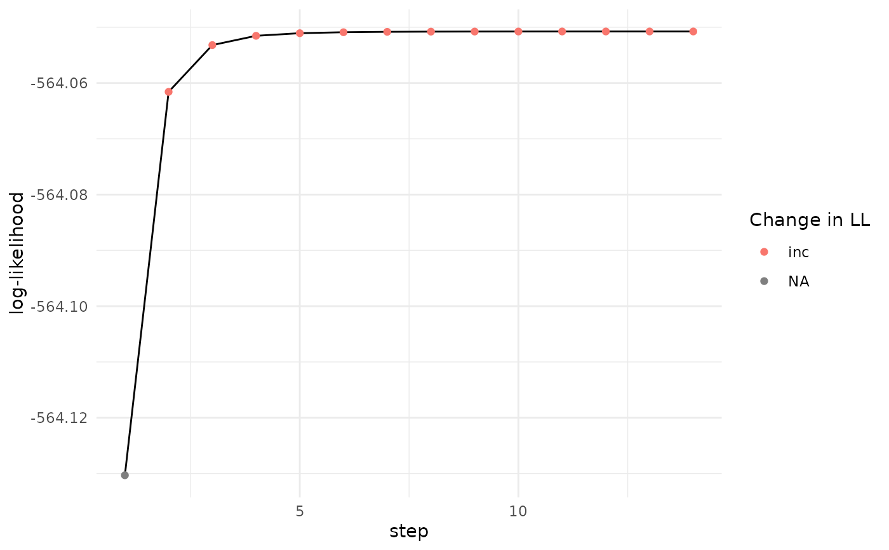

Plot likelihood curve of fitted model over the steps of the EM algorithm
Examples
data = simulate_mics()
output = fit_EM(model = "pspline",
approach = "full",
pre_set_degrees = c(4,4),
visible_data = data,
non_linear_term = "t",
covariates = NULL,
pi_formula = c == "2" ~ s(t),
max_it = 300,
ncomp = 2,
tol_ll = 1e-6,
pi_link = "logit",
verbose = 1,
model_coefficient_tolerance = 0.00001,
initial_weighting = 3,
sd_initial = 0.2
)
#> Stopped on combined LL and parameters
plot_likelihood(likelihood_documentation = output$likelihood)
